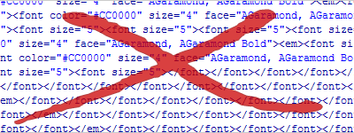

So let’s say – hypothetically – that you’ve decided to take the plunge and replace all of the font tags in your website with semantic code and CSS. Hypothetical congratulations! You’re one step closer to web nirvana. Or perhaps you’ve just inherited a website filled to the brim with hundreds of nested font tags forming some sort of primordial typographical soup. You have my (very real) condolences. Luckily, replacing font tags with semantic code and CSS isn’t as terribly difficult as it might seem at the outset. And to help you along your way, here are a few tips on how to tackle the project.
Font Usage Assessment
Start out with a complete assessment of your current font usage. How many typefaces are you using currently? How many sizes? Do you use some of them more than others (hopefully so!). In what context are the fonts used? Write out this information and see if you can’t discover some sort of a rational pattern in the usage. If you’re lucky, a good, distinct pattern will appear – article headings always appear in 20-pixel Arial, for example.
Replace Font Tags with Semantic Tags
If you’re lucky, and the font tags follow some sort of a rational pattern, you’re in a good spot. The easiest way to start down the road to font tag recovery is to replace as many font tags as you can with semantic, meaningful tags. For example, if all of the article headings look the same, why not replace those font tags with an actual heading tag (<h1> – <h6>)? And if all of your paragraphs contain identical font tags, then you can just eliminate those tags straight away. Then you can style these elements later on down the road with CSS.
Avoid Classitis
The last thing you want to do when eliminating all of those font tags is just to replace them with a slew of unique classes and IDs. Classitis (as this practice is commonly called) is nearly as bad a disease on the web as is font tag usage. Only use classes and IDs when absolutely necessary; if all of your <h3> tags have a class of “articleHeading,” what’s to stop you from just applying those styles to your <h3> instead? For more information on Classitis and how to prevent it, see this article on Combating Classitis.
Let Your Fonts Cascade
When it comes time to start writing your CSS, remember to let your font choices cascade. If you discover that you have one size and typeface used in 90% of your website (14px Arial, for example), there’s no reason to set this font information on every possible tag in your CSS. Just set your “default” (i.e., most common) typeface on your body tag instead. This will save you a ton of time and effort down the road.
Perform Unique-Case Triage
If you come across a single-use font tag in your website – a font style that is used in one and only one place in your website – this would be a good time to stop and consider whether to eliminate that unique case. Is that different typeface necessary? Was it even and intentional choice? With so many font tags scattered about, some differences in typography may be entirely accidental. If you decide that this specific instance is both deliberate and necessary (e.g., your error messages look different than the rest of the text), set an ID on the tag and style the element that way.
Use CSS Shorthand
You’ve probably found that, while you’ve managed to eliminate hundreds of font tags from your website, you’ve added dozens of lines of CSS to your site – and that can seem like an uneasy trade if you’re more comfortable with font tags than CSS. To help cut down on the length of your CSS file, it can help to use the font property shorthand (described here). By using the shorthand, you can turn six or so lines of CSS into a single, easily digestible rule.
Make an Editor Do the Work
HTML editors can sometimes cause just as many problems as they solve – they can be a great source for font tags, for example. But many editors (Dreamweaver, Notepad++< and many others) also have pretty powerful search-and-replace functionality. And this will come in handy when you finally get to the toughest part of transitioning away from font tag usage – deleting all of those font tags you don’t want anymore. At that point, and editor capable of doing a search/replace – and perhaps even better, one that understands regular expressions – can be worth its weight in gold. Otherwise, you could just always consider the time it takes you to go through all that code as some sort of penance. :)
These are seven suggestions to help make it easier to transition from font tags to semantic code and CSS. If you have any other suggestions you’d like to add, offer them up in the comments!
Pingback: Семь способов заменить тэг | АяксЛайн.ру
Just wanted to say greate site im really enjoying the articles/post’s, ive read a few css books which did help me learn the theory but its great to CSS used more pratically and that deal with the questions i sit there for hours googlin g and trying to figure out how to get it to “just work”,
anyway thanks for the post’s
css Font examples , Properties , Attribute – - //
http://www.css-lessons.ucoz.com/font-css-examples.htm
Is there any way I can just change the color of a single word? The font tag was useful for this. I’m sad that it’s gone.